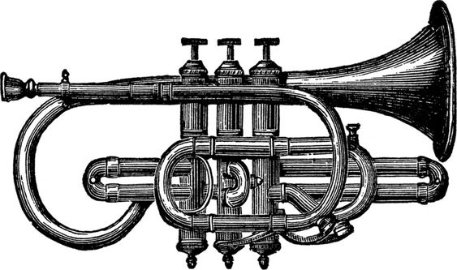

IMPLICITE
"Communiquer suppose aussi des silences, non pour se taire, mais pour laisser un espace à la rencontre des mots." Jacques SALOME

Quand dire, c'est faire. Les paroles sont aussi des actions. Dire, c'est transmettre à autrui certaines informations sur l'objet dont on parle, mais c'est aussi faire, c'est-à-dire tenter d'agir sur son interlocuteur, voire sur le monde environnant. Au lieu d'opposer comme on le fait souvent la parole et l'action, il convient de considérer que la parole elle-même est une forme d'action. Lorsqu’un locuteur s’adresse à un destinataire, il désire lui transmettre une information ou lui raconter un fait. Il peut aussi souhaiter agir sur lui, le convaincre, l’interroger, lui donner un ordre ou une autorisation.
Considérons qu'il y a deux manières de s’exprimer : la première est claire, explicite, sans ambiguïté, ni incertitude, la seconde est suggérée, implicite. Dans ce cas, on n’exprime pas formellement sa pensée, il faudra déduire, deviner, comprendre une information à partir d’un terme ou à partir du contexte. On dit qu’une information est implicite lorsqu’elle est seulement suggérée et que le locuteur fait appel au sens de la déduction et de l’interprétation du récepteur du message.
"Ce soir, je souhaite me reposer." Cela peut présupposer que :
- je puisse être fatigué
- je souhaite rester au calme
- je ne veux voir personne
- etc.
Parfois, le locuteur utilise le présupposé pour manipuler son destinataire en présentant comme évidentes des informations qui ne le sont pas. Ainsi, le locuteur peut dire une chose à son destinataire pour lui faire comprendre autre chose. Donc un même acte de langage peut recevoir un grand nombre de réalisations différentes : un constat, une plainte, une requête et même tout cela à la fois.
Ce discours implicite bâtie autour du présupposé ne contient aucun mot qui permette de le repérer, il n’est qu’allusion. Pour le comprendre, le destinataire doit mettre en relation le message et le contexte dans lequel il est énoncé. En d'autres termes, quand dire, c'est faire plusieurs choses à la fois ou quand dire c'est faire une chose sous les apparences d'une autre, cela génère incertitude et confusion. Et lorsqu’un présupposé n’est pas compris, il peut provoquer un malentendu. Dans la vie courante, il peut générer des conflits, des blocages, voire des symptômes.
Et il y a aussi les auto présupposés, ceux qu'on s'inflige ouvertement, sans s'entendre :
"Je vais essayer d'arréter de fumer." Ici, nous laissons présager que je puisse m'autoriser à ne pas y arriver. Derrière cette construction langagière, se constitue des possibilités et des actions, afin de ne pas y arriver.
Le présupposé est également le terrain favorable pour l'expression de ses croyances limitantes (voir page croyance) :
"Je vais essayer d'arrêter de fumer."
La possibilité de ne pas y arriver laisse la place à la croyance limitante construite autour du fait que cela fait longtemps que je fume, qu'il va me falloir du temps pour arrêter et que cela va être difficile.
Considérons qu'il y a deux manières de s’exprimer : la première est claire, explicite, sans ambiguïté, ni incertitude, la seconde est suggérée, implicite. Dans ce cas, on n’exprime pas formellement sa pensée, il faudra déduire, deviner, comprendre une information à partir d’un terme ou à partir du contexte. On dit qu’une information est implicite lorsqu’elle est seulement suggérée et que le locuteur fait appel au sens de la déduction et de l’interprétation du récepteur du message.
"Ce soir, je souhaite me reposer." Cela peut présupposer que :
- je puisse être fatigué
- je souhaite rester au calme
- je ne veux voir personne
- etc.
Parfois, le locuteur utilise le présupposé pour manipuler son destinataire en présentant comme évidentes des informations qui ne le sont pas. Ainsi, le locuteur peut dire une chose à son destinataire pour lui faire comprendre autre chose. Donc un même acte de langage peut recevoir un grand nombre de réalisations différentes : un constat, une plainte, une requête et même tout cela à la fois.
Ce discours implicite bâtie autour du présupposé ne contient aucun mot qui permette de le repérer, il n’est qu’allusion. Pour le comprendre, le destinataire doit mettre en relation le message et le contexte dans lequel il est énoncé. En d'autres termes, quand dire, c'est faire plusieurs choses à la fois ou quand dire c'est faire une chose sous les apparences d'une autre, cela génère incertitude et confusion. Et lorsqu’un présupposé n’est pas compris, il peut provoquer un malentendu. Dans la vie courante, il peut générer des conflits, des blocages, voire des symptômes.
Et il y a aussi les auto présupposés, ceux qu'on s'inflige ouvertement, sans s'entendre :
"Je vais essayer d'arréter de fumer." Ici, nous laissons présager que je puisse m'autoriser à ne pas y arriver. Derrière cette construction langagière, se constitue des possibilités et des actions, afin de ne pas y arriver.
Le présupposé est également le terrain favorable pour l'expression de ses croyances limitantes (voir page croyance) :
"Je vais essayer d'arrêter de fumer."
La possibilité de ne pas y arriver laisse la place à la croyance limitante construite autour du fait que cela fait longtemps que je fume, qu'il va me falloir du temps pour arrêter et que cela va être difficile.
Une variante, la métonymie est une figure de style qui, dans la langue ou son usage, utilise un mot pour signifier une idée distincte mais qui lui est associée. La métonymie est basée sur un lien logique entre le terme exprimé et le terme qu'il remplace. Elle est employée très fréquemment, car elle permet une expression courte, frappante, et souvent créative. D'innombrables métonymies sont figées dans les langues naturelles "comme boire un verre", tandis que d'autres sont dues à la créativité des locuteurs comme dans le vers "Paris a froid, Paris a faim.". Ici, Paris ne désigne évidemment pas la ville elle-même, mais bien la majorité de ses habitants.
Egalement, la double contrainte qui est une situation dans laquelle une personne est soumise à deux contraintes ou pressions contradictoires ou incompatibles. C'est un type particulier de conflit qui crée une situation "non-gagnante" ; c'est-à-dire, une situation dans laquelle on est "damné si vous le faîtes, et damné si vous ne le faîtes pas". Les doubles liens se produisent assez fréquemment au quotidien. Considérez le dilemme du mari qui, quand il demande à sa femme ce qu'elle pense de certains sujets, obtient en réponse : "ce n’est en aucun cas ses affaires." S'il ne demande rien à son épouse, il est cependant critiqué pour "ne pas se soucier" de ses opinions. Du fait de son incapacité à séparer la signification des deux messages et à répondre de manière appropriée, il se sent un mari inadéquat. Ces doubles liens conduisent souvent à un sentiment similaire de confusion et d'impuissance et si la personne est ou se sent prisonnière de la situation, cela peut rendre le problème insoluble et engendrer des troubles relationnels et une souffrance psychologique.
Enfin, le contexte est le lieu qui accueille l'implicite. Si vous n'êtes pas dans ce contexte, vous passez à coté de l'effet langagier car, lui, s'appuie sur le contexte pour s'exprimer. En somme, soyez dans l'instant présent afin de pouvoir mesurer cette double dimension. Entendez que nous communiquons à différents niveaux (verbal, non verbal) et nous ne faisons que cela, des présupposés! Ecoutez l'autre, c'est l'écouter à tous les niveaux, dans le moment.
Nous entendons tout cela, nous répondons et interagissons, parfois inconsciement, à ses suggestions stylistiques. Le fait d'en prendre conscience, de les percevoir, nous permet ainsi de pouvoir nous positionner émotionnellement et avec justesse.
Egalement, la double contrainte qui est une situation dans laquelle une personne est soumise à deux contraintes ou pressions contradictoires ou incompatibles. C'est un type particulier de conflit qui crée une situation "non-gagnante" ; c'est-à-dire, une situation dans laquelle on est "damné si vous le faîtes, et damné si vous ne le faîtes pas". Les doubles liens se produisent assez fréquemment au quotidien. Considérez le dilemme du mari qui, quand il demande à sa femme ce qu'elle pense de certains sujets, obtient en réponse : "ce n’est en aucun cas ses affaires." S'il ne demande rien à son épouse, il est cependant critiqué pour "ne pas se soucier" de ses opinions. Du fait de son incapacité à séparer la signification des deux messages et à répondre de manière appropriée, il se sent un mari inadéquat. Ces doubles liens conduisent souvent à un sentiment similaire de confusion et d'impuissance et si la personne est ou se sent prisonnière de la situation, cela peut rendre le problème insoluble et engendrer des troubles relationnels et une souffrance psychologique.
Enfin, le contexte est le lieu qui accueille l'implicite. Si vous n'êtes pas dans ce contexte, vous passez à coté de l'effet langagier car, lui, s'appuie sur le contexte pour s'exprimer. En somme, soyez dans l'instant présent afin de pouvoir mesurer cette double dimension. Entendez que nous communiquons à différents niveaux (verbal, non verbal) et nous ne faisons que cela, des présupposés! Ecoutez l'autre, c'est l'écouter à tous les niveaux, dans le moment.
Nous entendons tout cela, nous répondons et interagissons, parfois inconsciement, à ses suggestions stylistiques. Le fait d'en prendre conscience, de les percevoir, nous permet ainsi de pouvoir nous positionner émotionnellement et avec justesse.
EN RELATION


(NON) CHOIX
OSER
CROYANCE
BESOINS (relationnels)
COMMUNIQUER